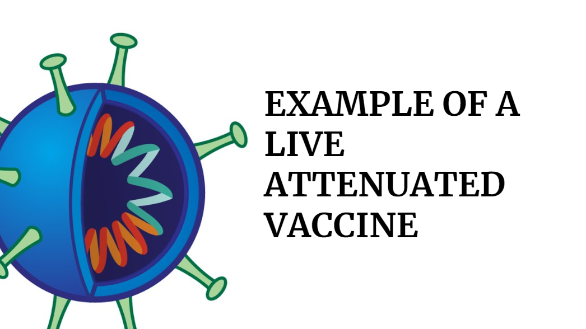
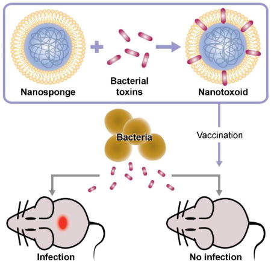

Tipo de Vacunas
Las vacunas se pueden dividir en varios tipos, pero en última instancia funcionan según el mismo principio. El
propósito es estimular una respuesta inmune para reconocer el patógeno (el organismo que causa la enfermedad) o
parte del patógeno. Si se le enseña al sistema inmunitario a reconocer esto, cuando se exponga más tarde al
patógeno, el cuerpo lo eliminará del cuerpo. En particular, el sistema inmunológico reconoce "antígenos"
extraños, partes del patógeno en la superficie o en el patógeno que normalmente no se encuentran en el cuerpo.
Vacunas inactivadas
Las vacunas inactivadas usan la versión muerta del germen que causa una enfermedad.

Las vacunas inactivadas generalmente no brindan inmunidad (protección) tan fuerte como las vacunas vivas.
Entonces puedes
necesitan varias dosis a lo largo del tiempo (vacunas de refuerzo) para obtener una inmunidad constante contra
las enfermedades.
Las vacunas inactivadas se utilizan para proteger contra:
- Hepatitis A
- Flu (una sola aplicacion)
- Polio (una sola aplicacion)
- Rabia
Vacunas vivas atenuadas
Las vacunas vivas usan una forma debilitada (o atenuada) del germen que causa una enfermedad.

Debido a que estas vacunas son tan similares a la infección natural que ayudan a prevenir, crean un fuerte y
respuesta inmune duradera. Solo 1 o 2 dosis de la mayoría de las vacunas vivas pueden brindarle protección de
por vida
contra un germen y la enfermedad que causa.
Pero las vacunas vivas también tienen algunas limitaciones. Por ejemplo:
Debido a que contienen una pequeña cantidad del virus vivo debilitado, algunas personas deben hablar con su
atención médica.
proveedor antes de recibirlos, como personas con sistemas inmunitarios debilitados, problemas de salud a largo
plazo o
personas que han tenido un trasplante de órgano.
Las vacunas vivas se utilizan para proteger contra:
- Sarampión, paperas, rubéola (vacuna combinada MMR)
- Rotavirus
- Viruela
- Varicela
- Fiebre amarilla
Vacunas de toxoides

Las vacunas toxoides usan una toxina (producto nocivo) producida por el germen que causa una enfermedad. Crean
inmunidad a
las partes del germen que causan una enfermedad en lugar del germen mismo. Eso significa que la respuesta inmune
es
dirigido a la toxina en lugar de todo el germen.
Al igual que otros tipos de vacunas, es posible que necesite inyecciones de refuerzo para obtener una
protección constante contra las enfermedades.
Las vacunas de toxoides se usan para proteger contra: